산타 크루즈에서의 레이더 이야기 (5) - 꼭대기에 사람 있어요!
게시: 2024-05-09T06:30:51+09:00
<신뢰가 바닥을 치다> 이렇게 거의 08시 55분에야 레이더로 북서쪽에서 날아오는 일본기의 존재를 파악한 호넷과 엔터프라이즈는 부랴부랴 그 방향으로 와일드캣 전투기들을 파견. 가는 와중에 호넷의 전투기들은 적기의 고도에 대한 어떤 정보도 듣지 못했으나, 현재 자신들의 고도인 3km는 너무 낮다고 보고 자체 판단으로 고도를 높이기 시작. 가보니 무려 53대에 달하는 뇌격기, 급강하 폭격기, 호위 전투기들이 뒤섞인 대편대. 그리고 결정적으로 적기의 고도는 5km. 이에 엔터프라이즈의 전투기들도 급히 고도를 높였으나 간신히 그 고도에 도달할 때 즈음 이미 일본기들은 다이빙을 시작. 결국 레이더에 의한 적기 포착이 너무 늦었던 것. 와일드캣 전투기들은 제대로 된 교전을 수행할 수가 없었고, 대부분의 일본 폭격기 및 뇌격기들은 와일드캣들을 뿌리치고 목표물로 달려듬. 일본 함재기들의 목표물은 모두 호넷. 원래대로라면 호넷에 절반, 엔터프라이즈에 절반이 달려들어야 했으나, 호넷으로부터 약 15km 떨어진 엔터프라이즈는 마침 상공을 덮은 두꺼운 비구름 아래에 있었기 때문에 일본기들의 눈에 호넷만 들어왔었기 때문. 이 절대절명의 순간에도 엔터프라이즈의 레이더 관제사인 그리핀 중령은 대체 일이 어떻게 돌아가는 것인지 완전히 파악하지 못하고 있었음. 지난 편에서 이야기했던 것처럼 나중에야 레이더 부품 중 waveguide에 문제가 있어서 레이더가 제대로 작동하지 않았다는 것을 알았지만 당시엔 그걸 몰랐고, 아무튼 레이더가 적기를 제대로 포착 못하는 것은 확실했으므로 레이더에 대한 신뢰도가 바닥을 쳤음. 레이더를 믿을 수 없다면 맨 눈으로 보면 되는데 엔터프라이즈를 뒤덮은 먹구름 때문에 일본기들도 엔터프라이즈를 볼 수 없었지만 엔터프라이즈도 일본기를 볼 수 없었음. 결국 그리핀 중령은 호넷의 레이더 관제사인 플레밍 대위에게 무전으로 '일본군 공격 편대는 하나인가?'를 물었고, 플레밍 대위는 바쁜 와중에도 '넓게 펼쳐진 하나 뿐인데 모두 호넷을 공격 중'이라고 답변. 그 답변을 받고서야 그리핀 중령은 엔터프라이즈 상공을 지키는 와일드캣 전투기들 중 절반을 호넷을 도우라고 날려보냄. <레이더가 결정한 함대 진형> 이렇게 산타 크루즈 해전에서의 레이더 관제는 완전 폭망. 결국 호넷은 일본 함재기들의 집중 공격을 받아 3발의 폭탄과 2발의 어뢰를 맞았고 그것도 모자라 일본 폭격기의 가미가제 공격까지 받아 완전히 동력을 잃고 바다 위에 정지 상태가 되어버림. 당연히 함재기 이착함도 받을 수 없어 살아남은 호넷의 함재기들은 모두 엔터프라이즈로 날아가야 했음.
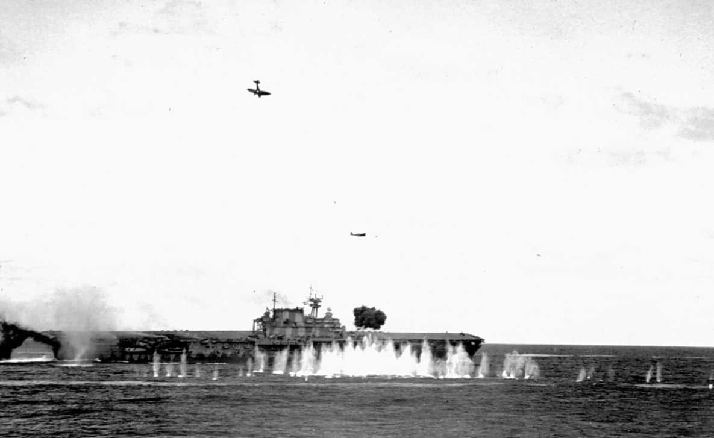
(산타 크루즈 해전에서 가미가제 공격을 당하기 일보 직전인 USS Hornet. 거의 수직으로 내리꽂고 있는 Val 급강하 폭격기는 사실 이미 대공포에 피격된 상태인데, 어차피 추락할 운명이라면 적과 함께 죽겠다는 생각이었던 듯. 바로 다음 순간 저 Val 폭격기는 호넷의 연돌(굴뚝)을 들이받고 튕겨나온 뒤 그대로 갑판을 덮침. Val 폭격기와 호넷 사이에 다른 항공기가 보이는데, 저건 일본해군의 Kate 뇌격기. 이미 어뢰를 투하하고 날아가는 중. 그리고 호넷의 갑판에서 막 터져 나오는 검은 색 연기는 폭탄에 피격된 것이 아니라 자체 대공포의 포연. 호넷 앞의 해면에 물보라를 일으키는 것은 기총소사가 아니라 대공포의 파편이라고 함.) 그런 와중에도 인상적이었던 것은 미해군의 대공포 화력. 습격해온 53대 중 25대가 대공포에 의해 격추되었고 살아서 돌아간 것은 고작 15대 뿐. 특히 인상적이었던 것은 신형 40mm 보포르(Bofors) 대공포를 갖춘 최신예 전함인 USS South Dakota (BB-57, 4만5천톤, 27노트)는 엔터프라이즈를 호위하고 있어서 참전하지도 않았으며, 호넷을 지키고 있던 것은 낡은 중순양함 2척과 경순양함 2척, 그리고 구축함 6척 뿐이었는데도 그랬다는 것. 호넷의 자체 대공 무장도 그랬지만 이런 호위함들의 당시 주대공포는 부족한 성능과 잦은 탄막힘으로 악명 높았던 1.1-inch (28mm) 대공포였음. 이렇게 빈약한 대공포로도 효과적인 대공 사격을 해낼 수 잇었던 것은 적기 포착을 완전히 레이더에 맡기고, 대신 항모를 중심으로 옹기종기 밀착하여 치밀한 탄막을 구축했기 때문. 반면 일본해군은 더 형편없는 대공포를 갖추었음에도 대공 방어를 호위함의 대공포보다는 제로센에게 맡긴 채 호위함들은 항모를 중심으로 넓게 흝어져 적기를 눈으로 찾는 것에 집중했음.
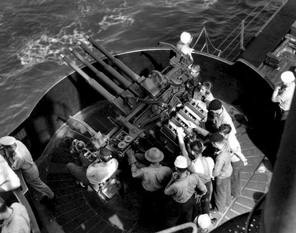
(사진은 산타 크루즈 해전 당시 엔터프라이즈의 1.1.인치 대공포. 모양새가 그랜드 피아노를 닮기도 했고 또 시카고 갱들의 톰슨 기관총을 연상시킨다고 해서 별명이 시카고 피아노, 시카고 타자기였음. 진주만 습격에서 이 대공포의 무능함이 드러났기 때문에 미해군은 여유가 생길 때마다 이 대공포를 최신 40mm 보포르 대공포로 교체했음.)
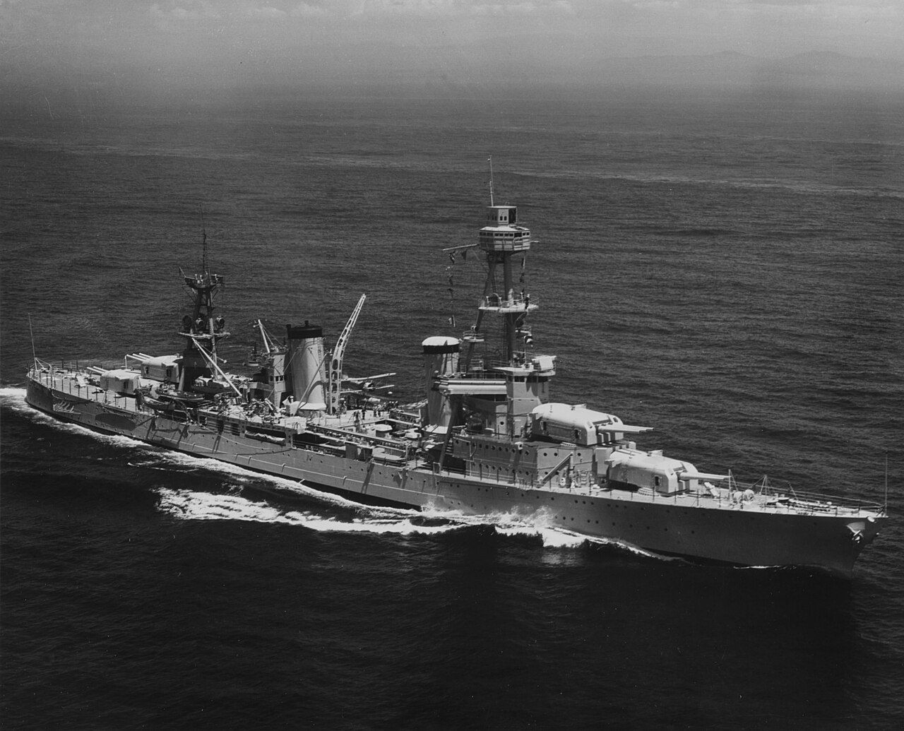
(USS Northampthon과 함께 호넷을 지키던 펜사콜라급 중순양함 USS Pensacola (CA-24, 1만1천톤, 32노트). 1929년에 진수된 다소 낡은 중순양함으로서, 이 사진은 1935년에 촬영된 것. 낡은 전함과 순양함들의 특징인 삼각기둥 위의 전망대가 잘 보임. 이 순양함에도 1940년 CXAM radar가 설치됨.)
나중에 40mm 보포르 대공포와 근접신관의 도입으로 더욱 강력해진 대공 화망은 이후 미해군 항모전단의 중요한 특징이 되었는데, 그 전통은 60~70년대의 냉전시대를 거쳐 지금까지 이르고 있음. 대공 미쓸의 시대인 현재는 물론, 유도 미사일이 없던 WW2부터도 미해군의 대공 화망의 중심에는 결국 레이더가 있었던 것. <무선침묵 중에도 무전기는 유용하다> 동력을 잃고 표류하는 호넷을 중순양함 노쌤턴이 굵은 밧줄로 묶어 예인하려고 노력하는 사이, 일본해군의 제2차 공격대가 날아옴. 이들이 이렇게 빨리 날아온 것에도 사연이 있었음. 일본해군 조종사들은 무선 침묵을 중요시하여 동료 조종사에게 신호를 보낼 때도 대부분의 경우 수신호로 소통. 그렇게 잘 쓰지도 않는 무전기는 항상 켜두었는데, 이유는 수다쟁이 미해군 조종사들이 서로 떠드는 내용을 듣고 뭔가 정보를 얻어내기 위해서였음. 그런데 이렇게 1차 공격대가 호넷을 맹폭하는 동안, 일본 조종사들은 미해군 와일드캣 전투기들을 지휘하는 목소리가 하나가 아니라 두 명인 것을 눈치챔. 뜻하는 바는 호넷 말고도 눈에 보이지는 않았지만 근처에 미해군 항모가 1척 더 있다는 뜻. 이 보고를 들은 쇼가꾸에서는 곧장 제2차 공격대를 날렸고, 때마침 일본해군의 눈인 장거리 수상정이 먹구름 아래서 빠져나오는 엔터프라이즈를 목격하고 그 위치를 곧장 고자질. 원래대로라면 진작 그런 정찰용 수상정을 포착하고 전투기를 보내 제거했었을 엔터프라이즈는 여전히 레이더의 원인 모를 저성능 때문에 그러지 못했음. 엔터프라이즈의 관제사 그리핀 중령은 엔터프라이즈를 노린 이 제2차 공격대에 대한 요격도 완전히 실패. 레이더가 여전히 정상 동작하지 않았기 때문. 그가 알 수 있었던 것은 북쪽~북서쪽 어디선가 일본 폭격기들이 날아온다는 것 뿐이었고, 와일드캣 편대에게도 그저 북쪽~북서쪽을 주의깊게 살피라고 지시했을 뿐. 그러나 여태까지 엔터프라이즈를 보호해줬던 먹구름이 이번에는 독이 되었음. 와일드캣들의 시선에서 일본 편대들을 완전히 감춰 주었던 것. 결국 19대의 급강하 폭격기와 5대의 호위 제로센들이 다이빙을 시작하기 전에, 고작 2대의 와일드캣만 이들과 교전할 수 있었고 나머지 12대는 아무 적기를 만나지 못하고 하늘에서 연료만 낭비하고 있었음. 그러나 이번에도 강력한 대공화망이 엔터프라이즈를 구함. 엔터프라이즈는 이미 일부 1.1-인치 대공포를 신형 40mm 보포르 대공포로 교체한 상태였고, 무엇보다 바로 옆에 강력한 전함 USS South Dakota (BB-57, 4만5천톤, 27노트)이 함께 달리며 하늘을 뺵빽한 대공포탄으로 채웠기 때문. 특히 바로 작년인 1941년에 진수되어 42년에 취역한 최신예 전함이었던 사우스다코타에는 시작부터 대함 레이더인 SG 레이더와 함께 대공 레이더인 SC radar가 달려 있었음. 사우스다코타를 비롯한 미해군 항모전단 호위함들의 강력한 대공화망 덕분에, 일본의 급강하 폭격기들은 19대 중 6대가 격추됨. 그러나 엔터프라이즈도 3방의 폭탄을 얻어맞음. 다행히 모두 제대로 맞춘 것은 아니어서 큰 피해는 내지 않음.
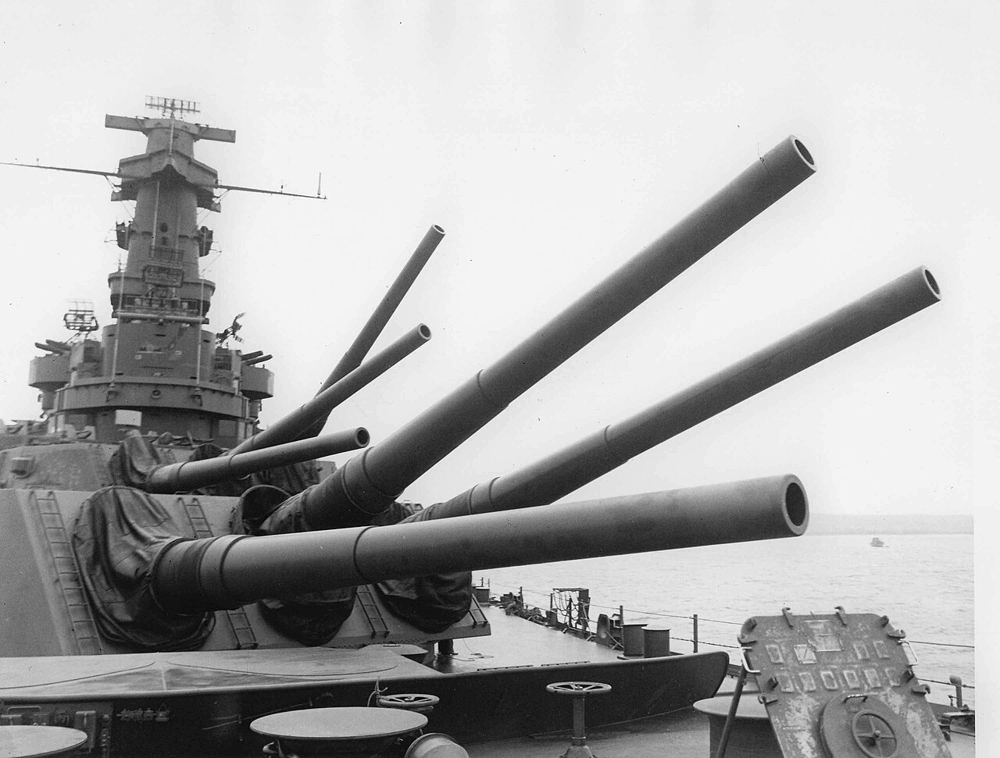
(USS South Dakota의 모습. 마스트 꼭대기와 그 중간에 다양한 레이더들이 달려 있는 것이 보임.)
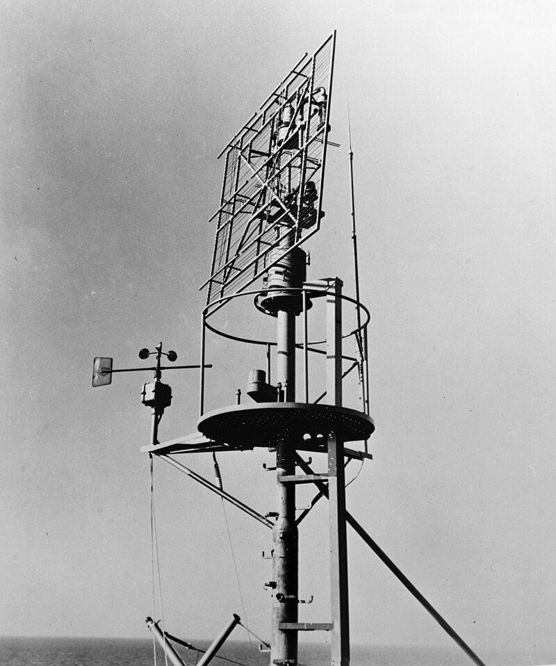
(이건 호위항모인 USS Long Island (AVG-1) 마스트 꼭대기에 달린 SC 레이더. 레이더 왼쪽에 보이는 뭔가 둥근 원반 2개가 달린 팔을 가진 구조체는... 별게 아니고 그냥 풍속계임.)
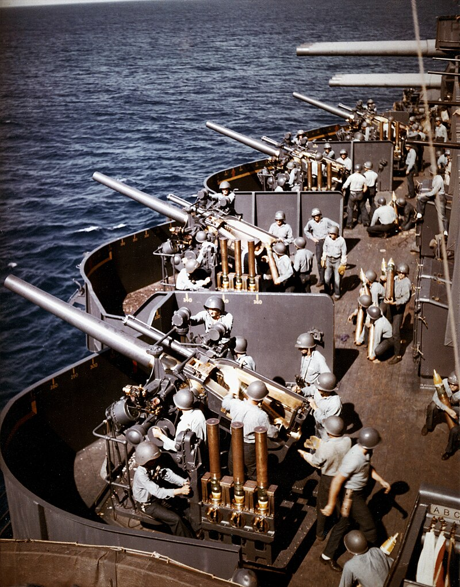
(당시 호넷이나 엔터프라이즈에는 달려 있지 않았지만 신형 전함 사우스다코타 뿐만 아니라 중순양함 펜사콜라와 노쎔턴에 달려있던 5-inch/25-구경 대공포. 1.1인치 대공포가 욕을 먹은 것과는 달리, 1920~30년대에 개발된 대공포지만 나름 우수한 성능과 편리성 덕분에 WW2 내내 애용되었는데, 포신을 짧게 하여 정확도는 떨어지더라도 조준하기 편하도록 한 것이 탁월한 선택이었다고. 이 사진은 전함 New Mexico에 달려 있는 5-inch/25-구경 대공포 배열의 사진 5인치 포마다 뭔가 구리 실린더 같은 것이 3개씩 달려 있는데, 저건 지연신관이 달린 대공포에 꼭 필요한 fuse setter. 그러니까 저 구리 실린더 같은 것들은 실제로는 포탄과 그 탄피이고, 발사하기 전에 저 fuse setter에 거꾸로 꽂아넣어 발사 후 몇 초 이후에, 그러니까 특정 고도에 다다르면 폭발하도록 그 시간을 세팅하는 것. 제대로 폭발 고도를 맞추기 위해서는 레이더 또는 광학 거리 탐지기를 이용하여 적기와의 거리를 먼저 측정해야 했음. 나중에 근접신관, 즉 아주 작은 레이더가 달린 VT신관이 개발된 뒤로는 저 fuse setter는 없어지게 됨.)
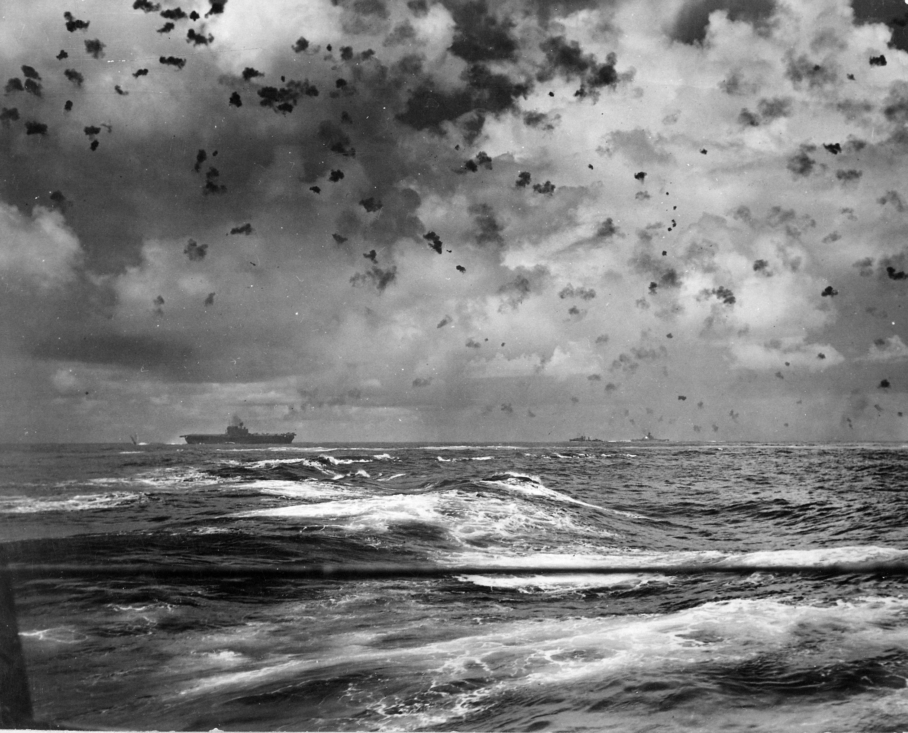
(산타 크루즈 해전에서의 엔터프라이즈와 그 상공의 대공포 화막.)
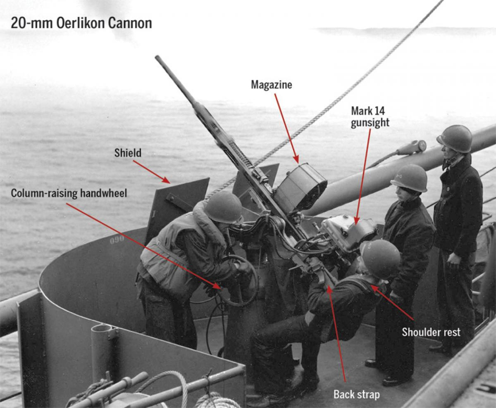
(사우쓰다코타는 산타 크루즈 해전에서 자기 혼자서만도 26대의 일본 함재기들을 격추했다고 주장했지만, 종전 이후 분석에 의하면 실제로는 당시 엔터프라이즈의 호위함들 전체가 13대만 격추. 그나마 저런 5인치 양용포나 1.1인치 대공포, 40mm 보포르 대공포보다는 사우쓰다코다에 22문이 달려있었던 저 20mm 오리콘 단거리 기관포가 가장 많은 일본기를 격추한 것으로 평가되었음. 당시만 해도 아직 레이더에 의한 대공포 유도가 제대로 사용되지 못했고, 특히 산타 크루즈 해전 당일에는 구름이 많이 끼어 있어서 5인치 양용포나 40mm 보포르 등 장거리 대공포가 위력을 발휘하지 못했기 때문.)
제3차 공격대로 날아온 것은 즈이가꾸에서 날아온 17대의 뇌격기들과 4대의 제로센들. 이번에는 엔터프라이즈의 CXAM 레이더가 제대로 이들을 포착했고, 그리핀 중령도 제대로 방향 지시를 했으나 일본 뇌격기들은 그 느린 속도에도 불구하고 결국 비집고 들어와 좌우로 나뉘어 어뢰를 투하. 다행히 모두 빗나갔고 17대 중 8대가 대공포와 와일드캣에게 격추됨. <꼭대기에 사람 있어요!> 일본기들의 공격이 대충 마무리된 11시 경, 갑자기 엔터프라이즈의 CXAM 레이더가 회전을 멈춤. 아마도 방금전 3발의 폭탄에 피격당할 때 입은 충격으로 뭔가 기계적 장치가 아슬아슬한 상태로 있었는데 제3차 공격대가 투하한 어뢰를 피하느라 급격한 기동을 할 때 결국 잘못된 모양. 레이더 안테나가 회전을 멈추니 관제사인 그리핀 중령은 적기는 고사하고 아군 와일드캣 전투기들이 어디에 있는지도 알 수가 없었음. 이런 상황에서 제4차 공격대가 쳐들어 오기라도 한다면 정말 큰일. 급한 김에 레이더 장교였던 Dwight M. B. Williams 중위가 용감하게 마스트를 기어올라 안테나 장치를 직접 살펴보니, 정말 회전 장치가 충격으로 레일에서 벗어나 있었음. 꽤 무거운 bedspring 안테나를 들어서 다시 원형 레일 위에 올려 놓자니 두 손을 모두 써야 했고, 엄청난 높이의 항모 마스트 꼭대기에서 그 짓을 하자니 너무 위험. 하지만 당장 언제 일본 폭격기가 날아올지 모르는 급박한 상황이라, 윌리엄즈 중위는 케이블로 자신의 몸을 bedspring 안테나에 묶고 무릎을 써서 그걸 들어올려 레일 위에 올려 놓음. 그런데 안테나가 레일 위에 올라가자마자 저 아래쪽에서는 문제가 해결되었다고 보고 안테나를 마구 돌리기 시작. 아직 몸이 안테나에 묶여 있던 윌리엄즈는 졸지에 뱅글뱅글 신세. 몇 분 뒤에 그 불쌍한 모양새를 누군가 보고 레이더실에 연락한 뒤에야 윌리엄즈 중위는 어질어질한 상태에서 몸을 묶었던 케이블을 풀고 내려올 수 있었음. <Enterprise vs. Japan> 결국 산타 크루즈 해전에서 미해군의 레이더를 이용한 전투기 관제는 완전한 폭망. 덕분에 호넷은 결국 격침되었고, 엔터프라이즈도 작지 않은 손상을 입었으며, 엔터프라이즈를 지키던 사우스다코타도 폭탄에 맞아 손상을 입음. 그에 비해 일본해군은 쇼가꾸와 즈이가꾸가 손상만 입었으므로 전술적으로는 분명히 일본해군의 승리.
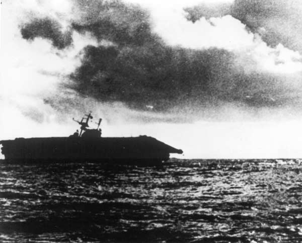
(침몰하는 호넷)
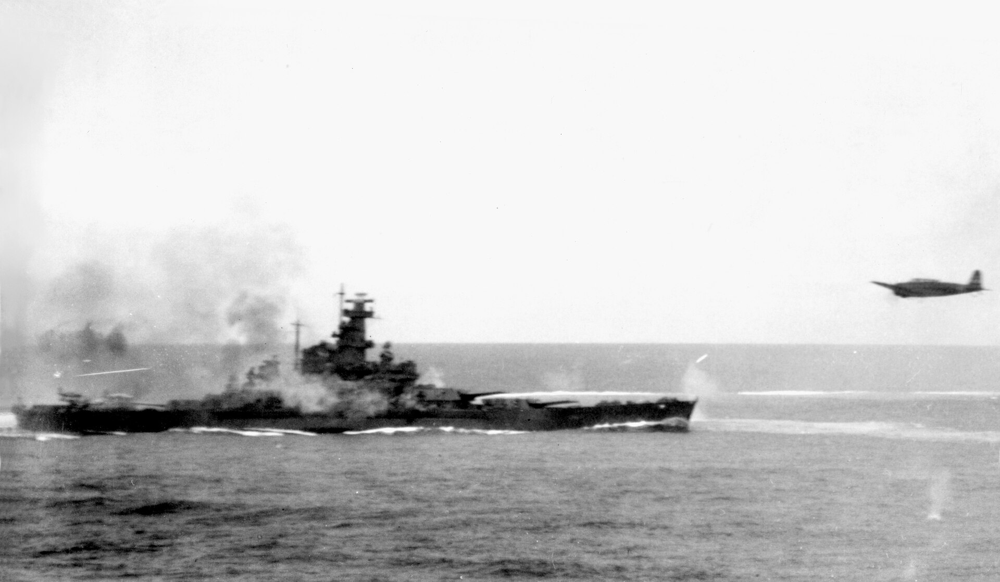
(산타 크루즈 해전에서 분전하는 사우스다코타. 그 옆을 지나가는 것은 일본해군 Kate 뇌격기. 사우스다코타에서 뿜어져 나오는 연기는 자체 대공포의 포화임.) 특히 이 해전의 결과, 미해군에게는 태평양 전역에서 항모가 엔터프라이즈와 사라토가 딱 2척만 남은 셈이 됨. 그나마 당시 사라토가는 수리 중. 이 해전에서 철수하면서 미해군 수병들은 엔터프라이즈의 격납 갑판에 "Enterprise vs. Japan"이라는 현수막을 내걸었는데, 이건 '일본 전체를 상대하는데는 엔터프라이즈 1척이면 충분하다'는 배짱을 보여주는 것이기도 했지만 미해군의 항모 전력에 남은 것이 엔터프라이즈 밖에 없다는 절박함의 표현이기도 했던 것.
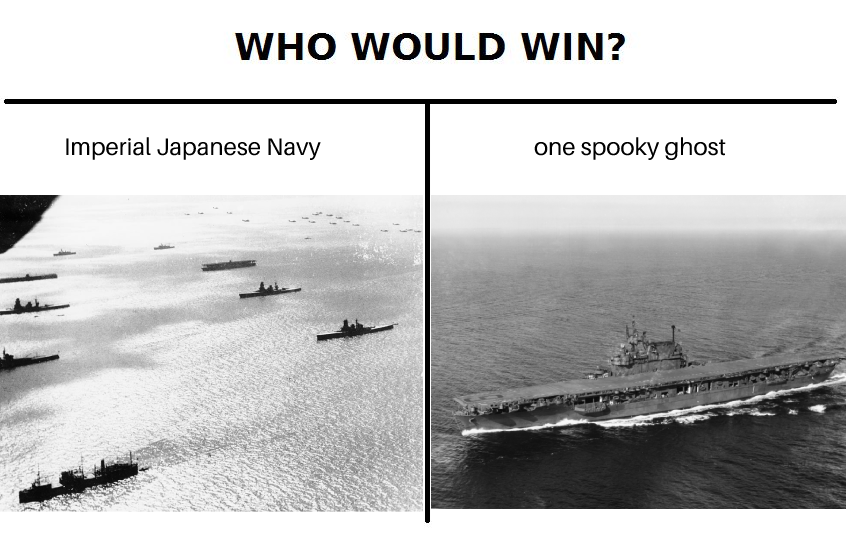
(당시 USS Enterprise는 영국 로열네이비에게 있어서 HMS Warspite와 같은 존재. 가장 최신도 아니고 가장 강력하지도 않지만 어떻게든 살아남았고 적에게 가장 큰 타격을 준 역전의 용사.)
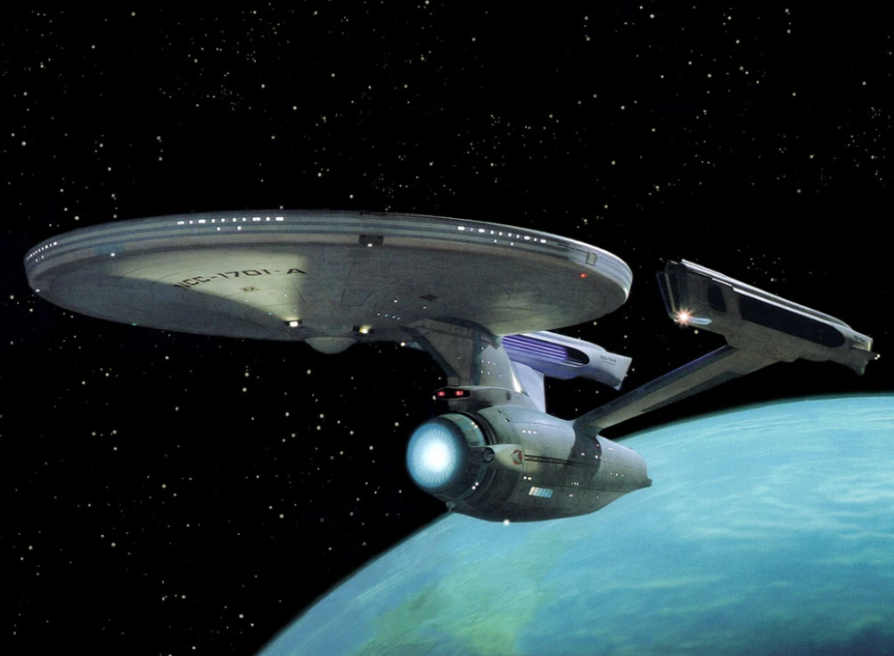
(스타트렉에 나오는 커크 함장의 함선명이 USS (United Space Ship) Enterprise인 이유도 실제로 저 CV-6 엔터프라이즈의 이름을 딴 것. 원래는 미드웨이에서 희생된 Yorktwon의 이름을 따려고 했으나, 이 시리즈의 제작자였던 Gene Roddenberry가 예전부터 USS Enterprise (CV-6)의 활약에 깊은 감명을 받았기 때문에 엔터프라이즈로 이름을 정한 것.)
산타크루즈 해전에서 형식적으로는 승리를 거둔 일본해군은 실제로는 전략적인 패배를 겪은 셈. Waveguide의 손상 문제로 레이더가 제대로 작동하지 않는 바람에 미해군 전투기들과의 싸움은 치열하지 않았지만, 이 해전에서 겪은 미해군의 대공포 화망의 위력은 일본해군 조종사들에게는 충격적 수준. 당시 엔터프라이즈 습격을 마치고 돌아온 일본해군 조종사를 본 어느 일본해군 장교는 치열한 대공포망에 입은 충격이 너무나 커서 그 조종사는 손을 계속 떨며 조종석에서 제대로 나오지도 못했다고 적었음. 미해군은 175대의 함재기 중 81대를 상실했으나, 조종사 및 승무원의 피해는 26명 뿐이었고 나머지는 모두 구조. 하지만 일본해군은 203대의 함재기 중 99대를 상실했고 조종사와 승무원 148명을 잃었는데, 이들은 모두 숙련된 베테랑들로서 예비 인력과 훈련 교관 및 설비가 부족했던 일본해군에게 이들의 상실은 정말 다시 채워넣을 수 없는 것이었음.
한편, 미해군으로서는 레이더만 믿었다가 이 정도로 낭패를 당했다면 이제 레이더에 대한 신뢰가 떨어질 만도 한데, 미해군 수뇌부의 생각은 달랐음. 조종사들과 관제사을 인터뷰하고 그들간의 교신 로그까지 다 뒤져보며 조사한 뒤 내린 미해군의 결론은 산타 크루즈 해전에서 레이더 관제가 제대로 되지 않은 이유는 장비와 시설, 인력 부족 때문이라고 결정짓고 새로 취역할 Essex급 항모들에게는 어떻게든 제대로 된 레이더 관제를 할 수 있는 시설, 즉 CIC (Combat Information Center)를 갖추도록 지시.
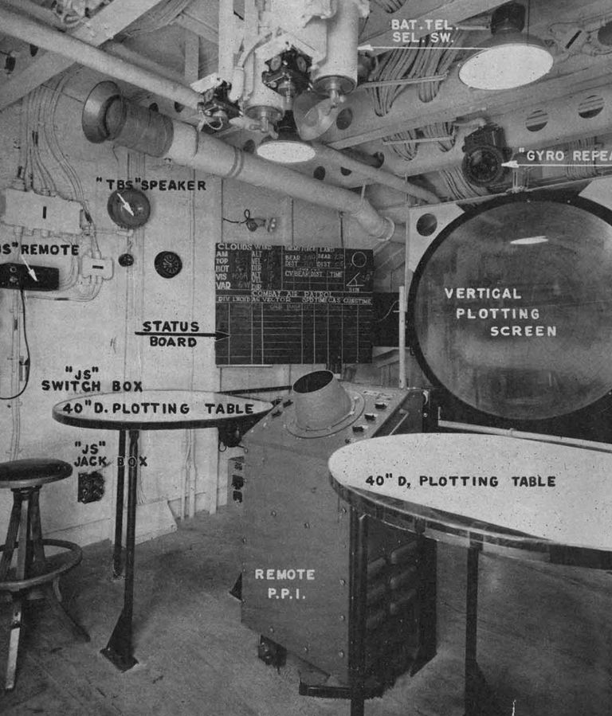
(어느 항모인지는 불분명한데, 초기 Essex급 항모의 임시변통 CIC. 초기 Essex급 항모들에게는 CIC가 설계에 고려되지 않았으므로 이미 거의 다 만들어진 항모의 일부 공간을 어떻게든 개조하여 CIC를 만듬. 저기 저 목재 stool 의자에서 절박함이 느껴짐.)